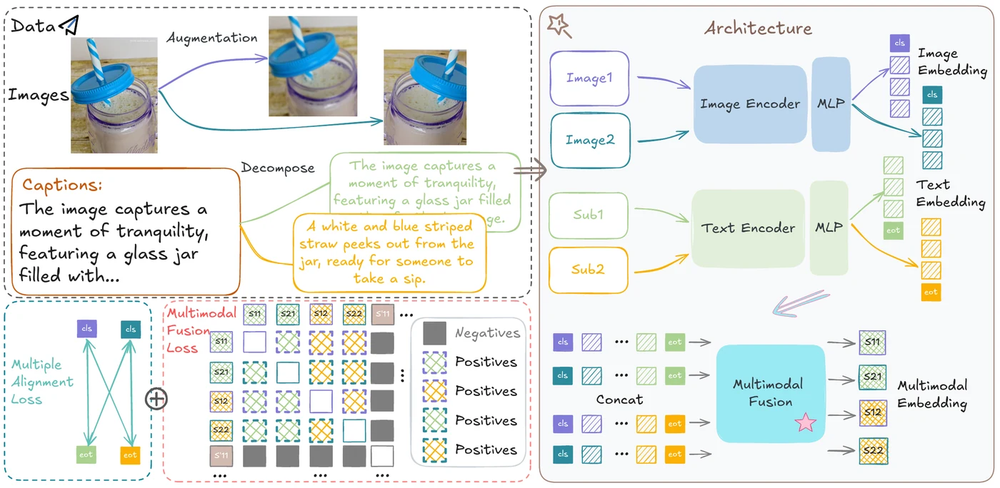
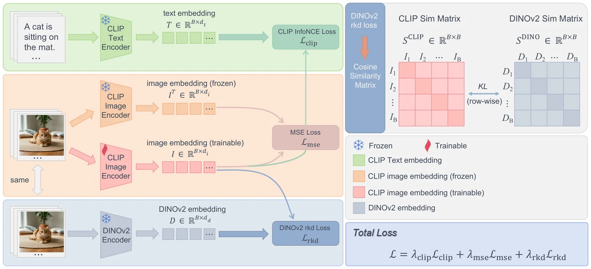
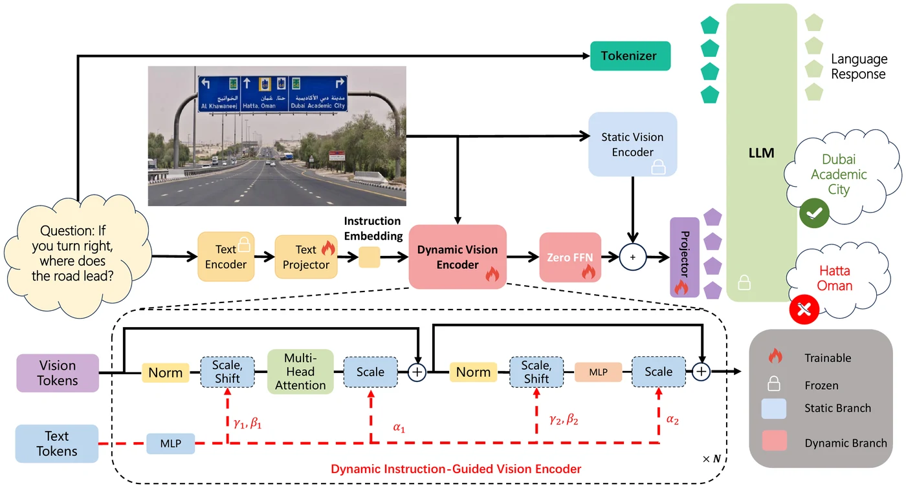
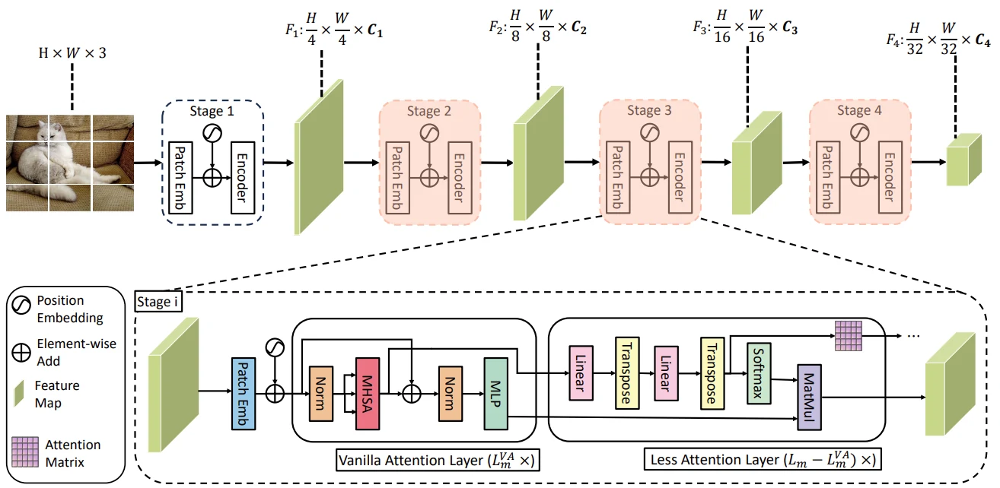

Hanpeng Liu
刘汉鹏
Ph.D. candidate, School of Computer Science and Technology, Huazhong University of Science and Technology (HUST)
I am a final-year Ph.D. student at HUST, advised by Prof. Kun He. I work on visual representations for multimodal foundation models: how to pretrain them, how to keep improving them after pretraining without losing what they already know, and how to make them work better inside multimodal LLMs. I have published three papers at NeurIPS and one at CVPR. As a research intern at Li Auto, I scaled CLIP-style pretraining to 128 A800 GPUs and 1B-scale image-text data.
I will finish my Ph.D. in June 2027 and am looking for postdoctoral positions in vision-language and multimodal learning. If you think my work fits your group, I would be glad to hear from you by email.

Research
- Pretraining Learning image-text and visual representations at scale: multi-view alignment with a fusion module used only during training (ITO, NeurIPS 2026), and self-supervised and autoregressive visual pretraining (Pattern Recognition 2025, Vision Mamba preprint).
- Post-training Improving a pretrained CLIP without forgetting, so the new vision encoder can replace the old one in a multimodal LLM without re-alignment (ComCLIP, NeurIPS 2026).
- Multimodal LLMs Vision encoders that respond to the question being asked (iGVLM).
- Efficiency Efficient vision transformers (LaViT, CVPR 2024) and knowledge and dataset distillation.
Publications
* equal contribution, † corresponding author. Full list on Google Scholar.
Selected
-
NeurIPS 2026
ITO: Multi-View Alignment and Training-Time Fusion for Image-Text Pretraining

Aligns images and texts across multiple views and adds a fusion module that is used only during training, so inference keeps the cost of a standard dual encoder. Gives consistent gains over CLIP under identical data, backbone and compute at the 100M to 1B scale. -
NeurIPS 2026
Rethinking Contrastive Loss in CLIP Post-training: A Complementary Framework with Frozen Text Encoder

Shows that forgetting in CLIP post-training is driven by the InfoNCE temperature rather than small batches. With the text encoder frozen, linear probing improves from 42.28 to 48.99 over CLIP-Refine (ViT-B/16), and the new encoder drops into LLaVA-1.5-7B with no net change across 8 benchmarks. -
Preprint
iGVLM: Dynamic Instruction-Guided Vision Encoding for Question-Aware Multimodal Understanding

Adds an instruction-conditioned branch next to a frozen vision encoder, so the visual features adapt to each question. Works as a plug-in across different language backbones, and introduces MM4, a probe for consistency under multiple queries and instructions. -
CVPR 2024
You Only Need Less Attention at Each Stage in Vision Transformers

LaViT computes full self-attention in only a few layers of each stage and reuses the attention matrix in the rest, improving efficiency on classification, detection and segmentation.


Other papers
-
2026
Separators in Enhancing Autoregressive Pretraining for Vision Mamba
-
2025
Boosting the Patch-based Self-Supervised Learning through Past-to-Present Smoothing
-
Class Discriminative Knowledge Distillation
-
Residual Learning for Self-Knowledge Distillation
-
Hyperspherical Dataset Distillation via Contrastive Embedding Alignment
-
2024
Leveraging Contrastive Learning for Enhanced Node Representations in Tokenized Graph Transformers
-
Grouped Logit Distillation Enhanced with Superclass Awareness for Efficient Knowledge Transfer
-
Knowledge Distillation via Token-Level Relationship Graph Based on the Big Data Technologies
News
- Sep 2026 Two papers accepted to NeurIPS 2026: ITO and ComCLIP.
- Mar 2026 iGVLM and our Vision Mamba pretraining paper are on arXiv.
- Sep 2024 One paper accepted to NeurIPS 2024. Started a research internship at Li Auto.
- Feb 2024 Co-first-author paper on efficient vision transformers accepted to CVPR 2024.
Experience and education
- 2024 – now
Li Auto, research internLarge-scale image-text pretraining on 128 A800 GPUs with 1B-scale data, and distributed training and evaluation for vision and vision-language foundation models.
- 2022 – now
Huazhong University of Science and Technology, Ph.D. studentComputer Science and Technology, advised by Prof. Kun He.
- 2018 – 2022
Huazhong University of Science and Technology, B.Eng.Computer Science and Technology.
Service and mentoring
- Conferences Reviewer for NeurIPS, ICLR, CVPR and AAAI.
- Journals Reviewer for Pattern Recognition and IEEE Transactions on Cybernetics.
- Mentoring ComCLIP (NeurIPS 2026, co-corresponding author): proposed the research idea, mentored junior HUST students through the project, contributed to the experiments, and led the paper writing.